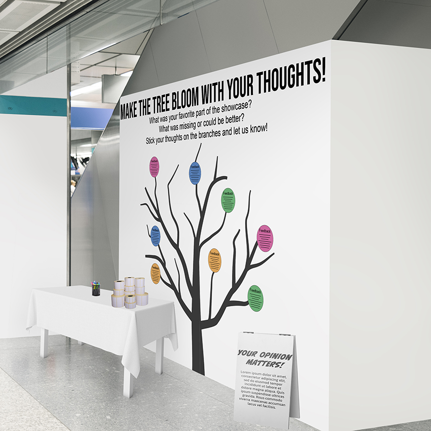
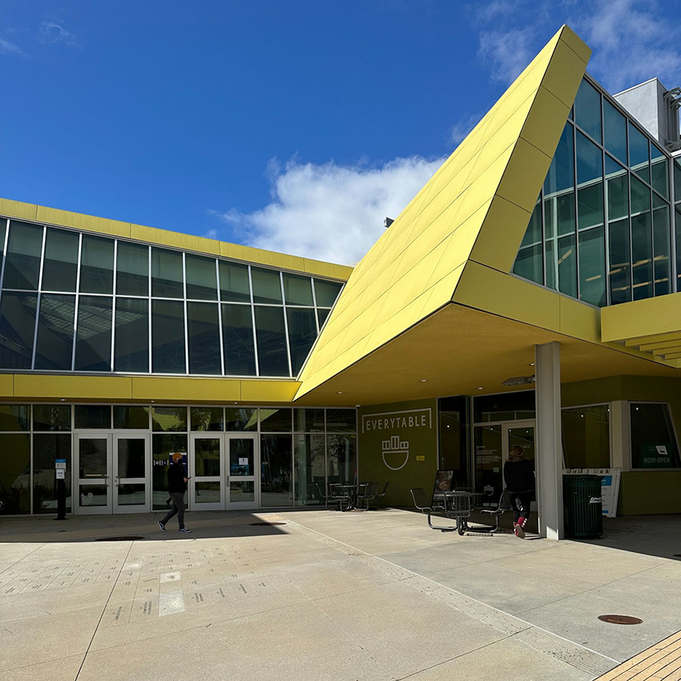

Problem: The lack of other reliable means of contact between the school and its students, other from the instructors, is one of the main challenges in spreading the word about the event Focal Point. In the lack of a single online hub it is challenging to reach a large audience and guarantee that students are informed of major events and possibilities.

Final Prototype.

Campus .

Story boarding.